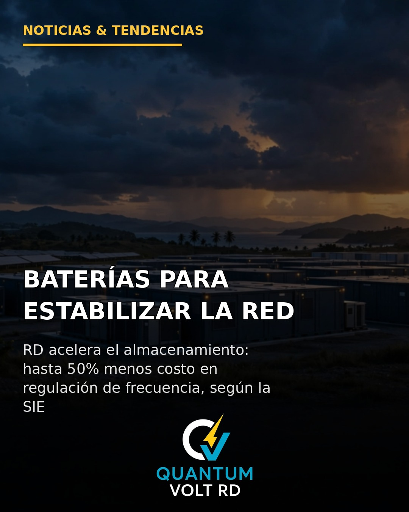
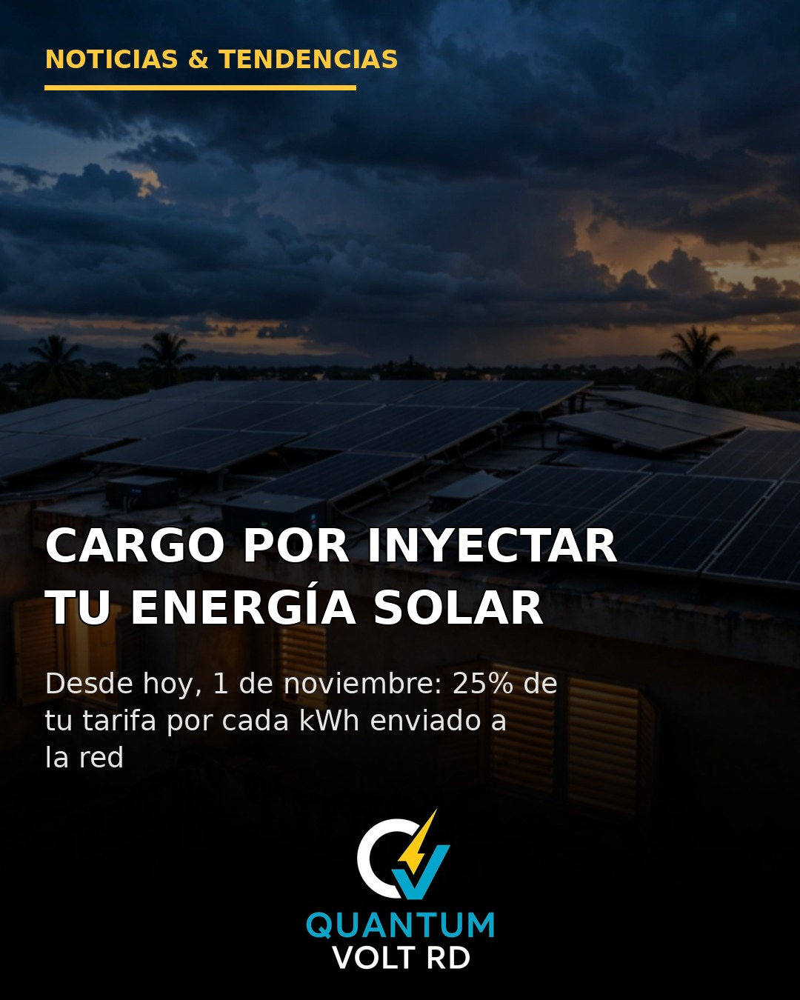

Sección de noticias
Noticias de Quantum Volt RD
Las noticias que publicamos cada día en nuestras redes, también aquí en nuestra página: energía solar, electricidad, domótica y tecnología en República Dominicana, con asesoría para tu hogar o negocio.

2 de noviembre de 2026 · Almacenamiento con baterías · SAEB
En 2025 el 81.1% de la generación dependió de combustibles fósiles importados, y la solar ya suma 1,580.96 MW. La SIE estima hasta 50% menos costo en regulación de frecuencia y los nuevos renovables de 20 MW o más deben incluir baterías del 50%.
Leer la noticia completa →

1 de noviembre de 2026 · Medición Neta · SIE-007-2026-REG
Desde el 1 de noviembre de 2026, la Resolución SIE-007-2026-REG aplica un cargo técnico (no es un impuesto) a determinados usuarios en Medición Neta. El autoconsumo no se cobra; los sistemas de inyección cero o con baterías quedan exentos.
Leer la noticia completa →
Las noticias nuevas se agregan al inicio de esta lista, de la más reciente a la más antigua.
← Volver a la página principal de Quantum Volt RD